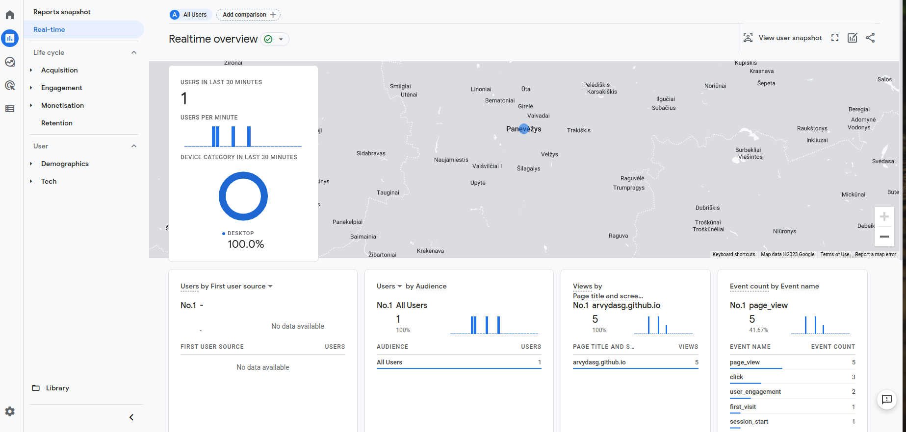

A year or so ago I had to set up Google Tag Manager and Google Analytics to a
few of my client websites for marketing purposes. I have not documented the
process back then, but will do so now as I am setting it up for this site.
(Yes, I know that you have been here ;) )
1. Setup GTM(Google Tag Manager)
It will act as single place where you put all your tags in the future. Good for
managing and debugging.
You might get such a message "Universal Analytics properties will stop
collecting data starting 1 July 2023. It’s recommended that you create a
Google Analytics 4 property instead." You can ignore it, but make sure you
are creating Google Analytics 4 property. Remember this for the later steps.
Set up Data Streams to start collecting data
Get the MEASUREMENT ID, in my case it's something similar to G-NYYXE875PQ
3. Back to GTM
Go to Tags, clink on new, tag configuration
Select Google Analytics: GA4 Configuration
Add your MEASUREMENT ID into the provided field
In the same page - click on trigger field to add a new trigger
Choose "All Pages"
Name your tag, for example "GA4 Configuration - G-NYYXE875PQ"
Save the tag
Go to the preview mode again, upon your page refresh you now see the
"debugger active" and next to "Tags Fired" you will see your tag name "GA4
Configuration - G-NYYXE875PQ", the data should get transmitted. Nice and
easy.
While still in preview mode, go to Google Analytics admin site, find "Debug
view" in one of the sidebars and open it.
You will see the data flowing in real time from your preview mode to your GA4
tag. Pretty cool. This allows you to debug interactions to your website on a
more granular level.
You can(or anyone else can) install a "Google Analytics Debugger" extension
to their browser and when they navigate through your page - your debugger
view will see those changes.
Go back to your main admin GTM site - click on "Submit" to save your changes
to the environment. In the "Version field" field enter "Installed GA4" for
example and click Publish.
If everything went successfully, you can go to you GA admin page, choose
Reports -> Real-Time and you should see something like this :)
Congrats!

p.s.
If you dont see the data just yet, be patient, it should appear sooner than
later.